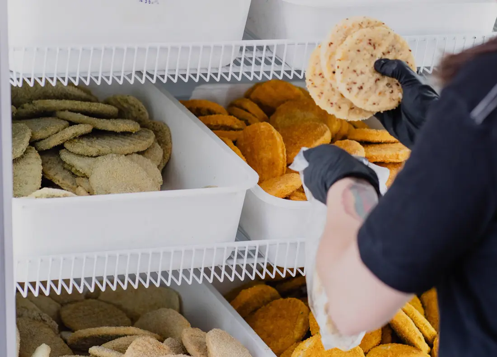

InicioCómo pedir
Cómo pedir
El pedido sale armado por WhatsApp a la sucursal que elijas. No hace falta llamar ni dictar productos.
Si pedís hoy, te llega el día siguiente, de 8 a 20 h
Paso a paso
Cuatro pasos, desde el celular o la computadora.
- Armás el pedido en el catálogo
Marcás los productos y las cantidades, por menor o por caja. Podés agregar de a uno o varios juntos.
- Elegís sucursal o envío a domicilio
San Miguel de Tucumán, Concepción o Monteros. Si es envío, ponés la dirección.
- Lo mandás por WhatsApp
El mensaje sale escrito con todo el detalle y el total estimado. La sucursal te confirma el pedido.
- Te llega al día siguiente
Repartimos de 8 a 20 h en el Gran San Miguel de Tucumán y el sur de la provincia.

Empezá por el catálogo
Pollo, pescados y mariscos, rebozados, huevos, envasados y verduras congeladas.
Armar mi pedido